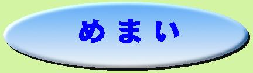

めまい・メニエルでよく使う漢方薬と漢方治療の携帯サイトはこちら
めまい・メニエルでよく使う漢方薬と漢方治療のスマートフォン用サイトはこちら

| めまい（メニエル氏症候群等）は、西洋医学がもっとも苦手とする疾患の一つです。しかし、漢方では逆に治しやすい疾患の一つです。 |
| 正常な人の身体には、気・血・津液が滞ることなく、秩序正しく流れています。しかし、何らかの原因でこの流れが過多になったり滞ったりすると、身体にいろいろな異変が現れます。 この異変が上焦（胸から上の部分）で生じるとめまいなどの疾患が現れます。 |
★漢方医学では、めまいの原因を大きく３つに分類します
| １，頭の方へ上がる流れが過多となった場合。 ２，頭の方から下がる流れが滞った場合。 ３，気・血・津液を全身に巡らせるだけのパワーが無い場合。 |
|
１の場合はストレスが原因している事が多く、イライラ感を伴う場合が多いようです。 |
めまいの治療でよく使われる漢方薬
| 漢方薬 | 価格（税抜き） |
| 補中益気湯 | １０，３００円 |
| 半夏白朮天麻湯 | １５，８００円 |
| 苓桂朮甘湯 | ５，７００円 |
| 釣藤散 | ８，４００円 |
| 鹿茸大補湯 | ３８，０００円 |
| 杞菊地黄丸 | ７，０００円 |
| 漢方薬は自己判断で服用しないようにしましょう。 服用の際には、必ず信頼のおける漢方の専門家へ御相談ください。 安全な漢方薬でも、使い方次第では危険な薬になってしまいます。 |